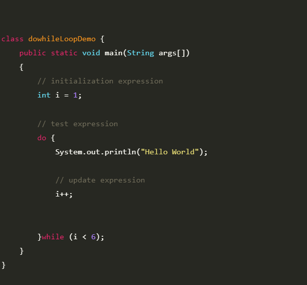

O loop do while do java é usado para repetir uma parte do programa algumas vezes. Se o número de iterações não é fixo e você precisa executar o loop pelo menos uma vez. É recomendado o uso do loop do while. O loop do while é executado pelo menos uma vez porque a condição é checada depois do corpo do loop.
